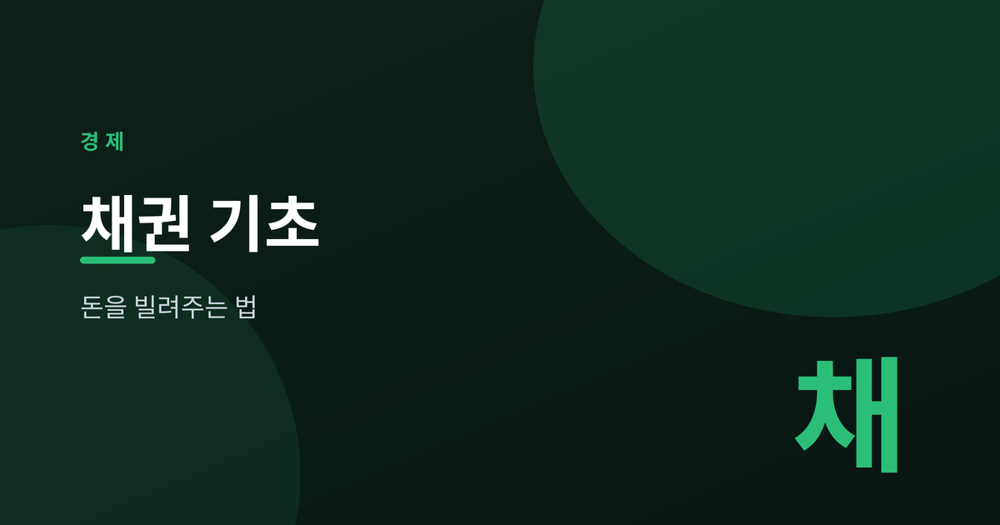
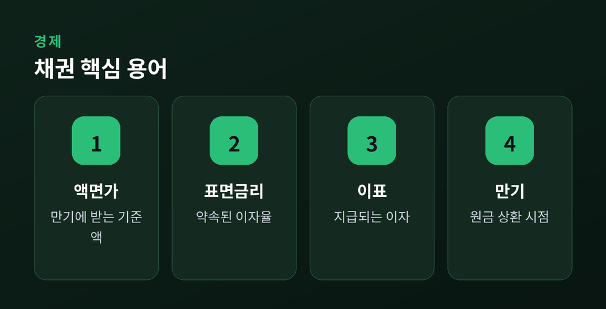
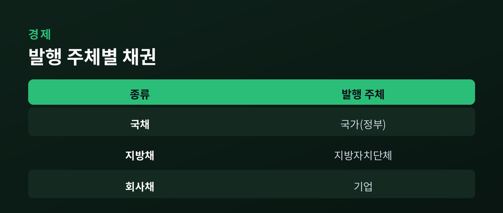
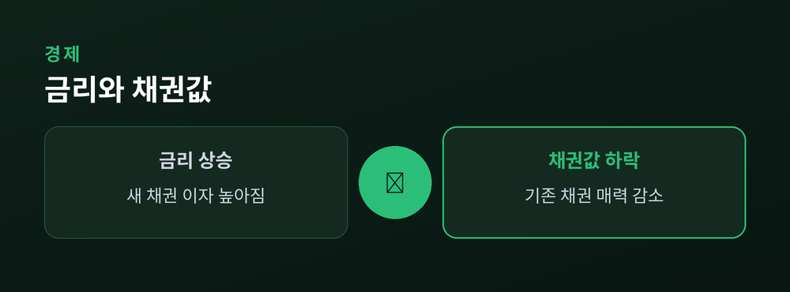
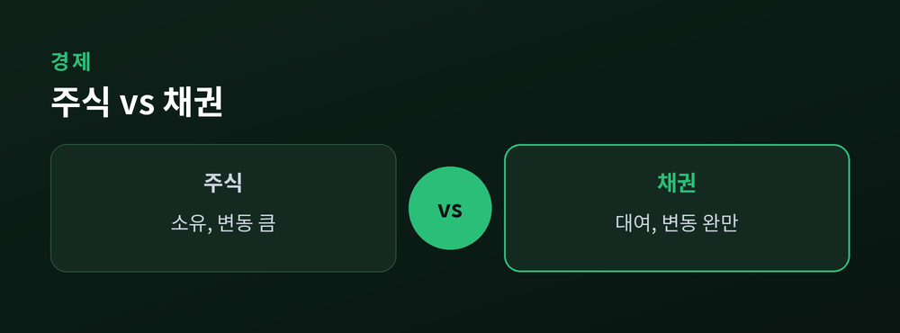

나라와 기업에 돈을 빌려주는 법

투자를 이야기할 때 주식만큼 자주 등장하는 것이 채권입니다.
이름은 익숙하지만 구조는 낯설게 느껴지기 쉽습니다.
이번 글에서는 채권의 기본 개념을 차근차근 함께 살펴보겠습니다.
채권은 한마디로 차용증입니다.
발행자가 투자자에게 돈을 빌리고, 정해진 이자를 약속하는 증서입니다.
만기가 되면 빌린 원금을 돌려주기로 합니다.
즉 채권을 산다는 것은 발행자에게 돈을 빌려주는 행위입니다.
그 대가로 투자자는 이자를 받습니다.

용어를 짧게 정리하겠습니다.
액면가는 만기에 돌려받는 기준 금액입니다.
표면금리는 액면가에 대해 약속된 이자율입니다.
이표는 그에 따라 지급되는 이자를 뜻합니다.
만기는 원금을 돌려받는 시점입니다.
채권은 누가 발행하느냐에 따라 나뉩니다.
발행 주체가 다르면 성격도 달라집니다.

| 종류 | 발행 주체 |
|---|---|
| 국채 | 국가(정부) |
| 지방채 | 지방자치단체 |
| 회사채 | 기업 |
일반적으로 발행 주체의 상환 능력이 안정적일수록 위험은 낮게 여겨집니다.
다만 개별 채권의 조건은 저마다 다릅니다.
채권 가격과 시장금리는 반대로 움직입니다.
이 관계가 채권 이해의 핵심입니다.

이미 발행된 채권은 이자가 고정되어 있습니다.
그런데 시장금리가 오르면, 새로 나온 채권이 더 높은 이자를 줍니다.
그러면 이자가 낮은 기존 채권의 매력은 상대적으로 떨어집니다.
그 결과 기존 채권의 가격은 내려갑니다.
반대로 금리가 내리면 기존 채권의 가치는 올라갑니다.
둘은 성격이 뿌리부터 다릅니다.

주식은 회사의 지분을 갖는 소유입니다.
채권은 돈을 빌려주는 대여입니다.
주식은 성과에 따라 수익이 크게 오르내립니다.
채권은 정해진 이자를 기대하는 대신 변동은 대체로 완만한 편입니다.
소유냐 대여냐, 이 차이가 위험과 수익의 성향을 가릅니다.
채권도 위험이 없지 않습니다.
발행자가 약속을 지키지 못할 신용위험이 있습니다.
시장금리 변동에 따른 금리위험도 존재합니다.
본인의 목적과 감당 가능한 위험을 먼저 살피는 자세가 필요합니다.
이 글은 투자 권유가 아니며 참고용입니다.